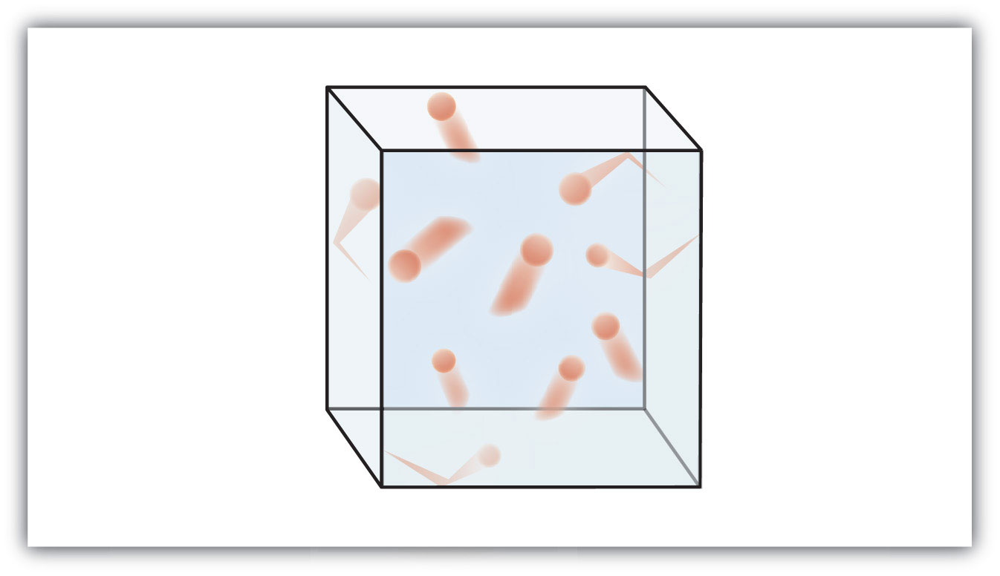

Gases were among the first substances studied in terms of the modern scientific method, which was developed in the 1600s. It did not take long to recognize that gases all shared certain physical behaviors, suggesting that all gases could be described by one all-encompassing theory. Today, that theory is the kinetic theory of gasesThe fundamental model that describes the physical properties of gases.. It is based on the following statements:
Figure 6.1 "The Kinetic Theory of Gases" shows a representation of how we mentally picture the gas phase.
Figure 6.1 The Kinetic Theory of Gases
The kinetic theory of gases describes this state of matter as composed of tiny particles in constant motion with a lot of distance between the particles.
This model of gases explains some of the physical properties of gases. Because most of a gas is empty space, a gas has a low density and can expand or contract under the appropriate influence. The fact that gas particles are in constant motion means that two or more gases will always mix, as the particles from the individual gases move and collide with each other.
An ideal gasA gas that exactly follows the statements of the kinetic theory. is a gas that exactly follows the statements of the kinetic theory. Unfortunately, real gases are not ideal. Many gases deviate slightly from agreeing perfectly with the kinetic theory of gases. However, most gases adhere to the statements so well that the kinetic theory of gases is well accepted by the scientific community.
State the ideas behind the kinetic theory of gases.
The average speed of gas particles depends on what single variable?
Define ideal gas. Does an ideal gas exist?
What is a gas called that is not an ideal gas? Do such gases exist?
Gases consist of tiny particles of matter that are in constant motion. Gas particles are constantly colliding with each other and the walls of a container. These collisions are elastic; that is, there is no net loss of energy from the collisions. Gas particles are separated by large distances, with the size of a gas particle tiny compared to the distances that separate them. There are no interactive forces (i.e., attraction or repulsion) between the particles of a gas. The average speed of gas particles is dependent on the temperature of the gas.
An ideal gas is a gas that exactly follows the statements of the kinetic theory of gases. Ideal gases do not exist, but the kinetic theory allows us to model them.